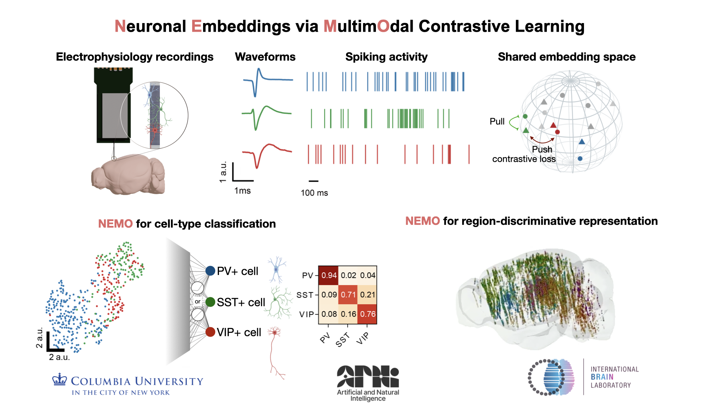
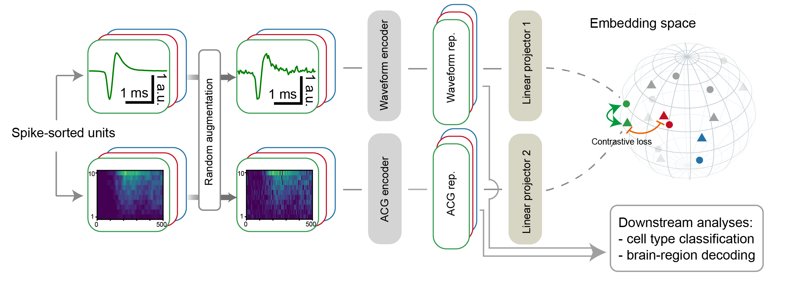
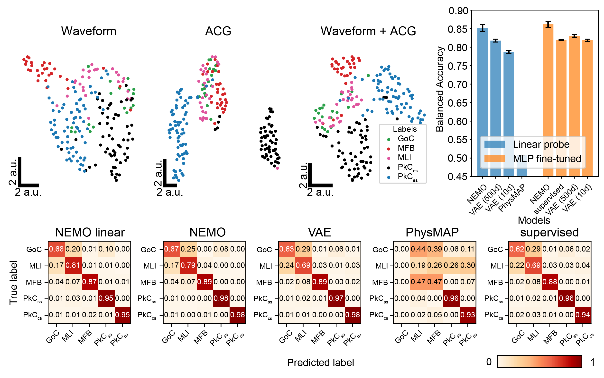
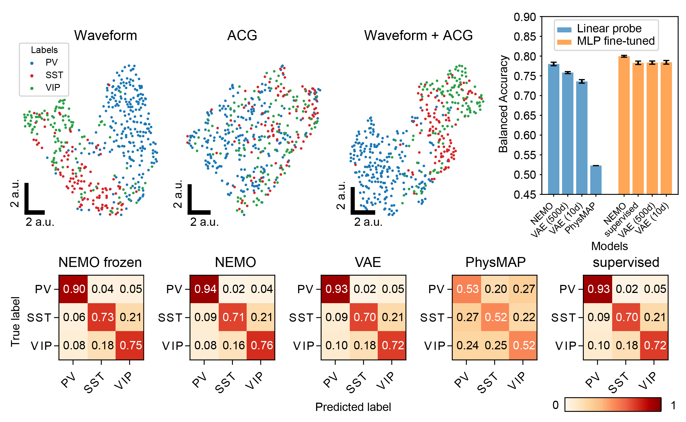
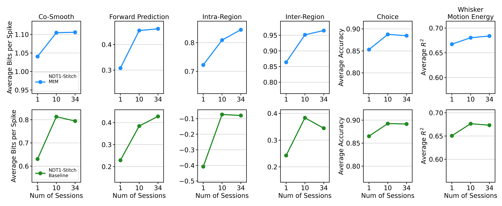
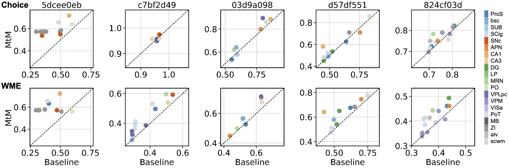
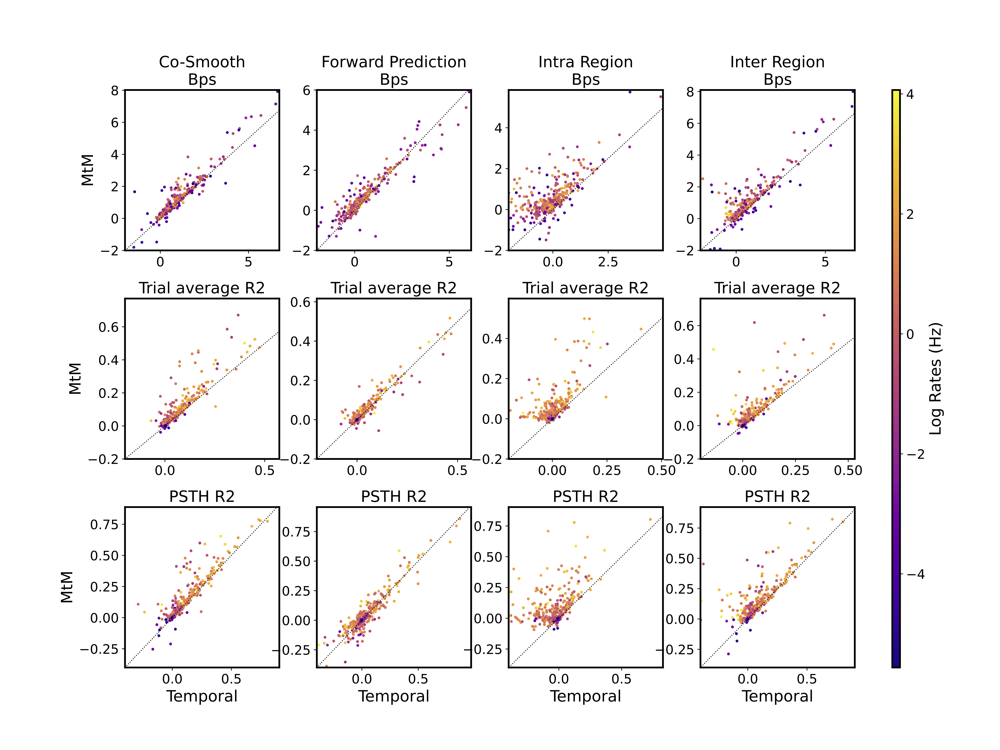

In vivo cell-type and brain region classification via multimodal contrastive learning
- 1Columbia University
- 2Northwestern University
- 3Boston University
- 4University of College London
- 5Allen Institute
- 6Champalimaud Foundation
- 7Georgia Institute of Technology
- 8University of Washington


Overview
Abstract
Current electrophysiological approaches can track the activity of many neurons, yet it is usually unknown which cell-types or brain areas are being recorded without further molecular or histological analysis. Developing accurate and scalable algorithms for identifying the cell-type and brain region of recorded neurons is thus crucial for improving our understanding of neural computation. In this work, we develop a multimodal contrastive learning approach for neural data that can be fine-tuned for different downstream tasks, including inference of cell-type and brain location. We utilize multimodal contrastive learning to jointly embed the activity autocorrelations and extracellular waveforms of individual neurons. We demonstrate that our embedding approach, Neuronal Embeddings via MultimOdal Contrastive Learning (NEMO), paired with supervised fine-tuning, achieves state-of-the-art cell-type classification for two opto-tagged datasets and brain region classification for the public International Brain Laboratory Brain-wide Map dataset. Our method represents a promising step towards accurate cell-type and brain region classification from electrophysiological recordings. Code is availabe at https://github.com/Haansololfp/NEMO.
Highlights
- A multimodal contrastive learning method for electrophysiological data, Neuronal Embeddings via MultimOdal Contrastive Learning (NEMO).
- Utilizes unlabeled data for pre-training and can be fine-tuned for different downstream tasks including cell-type and brain region classification.
- NEMO outperforms current unsupervised (PhysMAP and VAEs) and supervised methods, with particularly strong performance in label-limited regimes.
Model schematic
NEMO utilizes a CLIP-based objective where an EAP encoder and an ACG image encoder are trained to embed randomly augmented EAPs and ACG image from the same neuron close together while keeping different neurons separate. The learned representations can be utilized for downstream tasks such as cell-type and brain-region classification.
Cerebellum cell-type classification
Visual cortex cell-type classification
Comparing NEMO to baseline models on two different optotagged datasets: an NP Ultra visual cortex (Ye et al. 2024) and a Neuropixels 1 cerebellum dataset (Beau et al. 2025). We show the UMAP visualization of NEMO representations for unseen opto-tagged units, colored by different cell-types. We also show the Balanced accuracy Confusion matrices normalized by ground truth label and averaged across 5 random seeds. NEMO outperforms the other embedding methods by a significant margin across all cell-types and evaluation methods.
Scale analysis
Comparison of scaling curves between NDT1-stitch pretrained with the MtM method vs. the temporal masking baseline. The reported metrics - neuron-averaged bits per spike (bps), choice decoding accuracy, and whisker motion energy decoding R2 - are averaged over all 5 held-out sessions. We fine-tune each pretrained model with its self-supervised loss (MtM or temporal) on the 5-heldout sessions and then evaluate with all of our metrics. "Num of Sessions" denotes the number of sessions used for pretraining.
Behavior decoding from individual brain regions
Comparison of NDT1-stitch pretrained with the MtM method vs. the baseline temporal masking on behavior decoding from individual brain regions. The rows display choice decoding accuracy and whisker motion energy decoding R2. Columns represent individual held-out sessions. Each point shows the behavior decoding performance when using neural activity from a specific brain region, with colors denoting different brain regions.
Single neuron evaluation
Single neuron activity reconstruction analysis for NDT1 in one session. To evaluate the reconstruction quality for each neuron, multiple metrics are computed: Bits per spike (Bps), R2 between the ground truth and predicted peristimulus time histogram (PSTH R2), and the single-trial R2 averaged across all trials (Trial average R2). Each point represents one neuron, with the color indicating the neuron's log firing rates in Hertz (Hz).
BibTeX
If you find our data or project useful in your research, please cite:
@InProceedings{Zhang_2024_arXiv,
author = {Zhang, Yizi and Wang, Yanchen and Benetó, Donato Jiménez and Wang, Zixuan and Azabou, Mehdi and Richards, Blake and Winter, Olivier and The International Brain Laboratory and Dyer, Eva and Paninski, Liam and Hurwitz, Cole},
title = {Towards a “universal translator” for neural dynamics at single-cell, single-spike resolution},
booktitle = {arXiv},
month = {July},
year = {2024},
url = {http://arxiv.org/abs/2407.14668}
}